La tua scrittura, su ogni dispositivo.
Un quaderno per Apple Pencil, dito o mouse, su iPad, iPhone e Mac. PDF su cui studiare, pagine che crescono mentre scrivi e sync dal vivo con il tuo iCloud Drive.
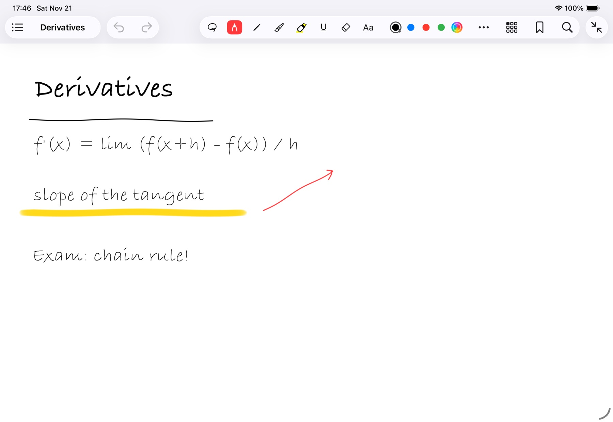
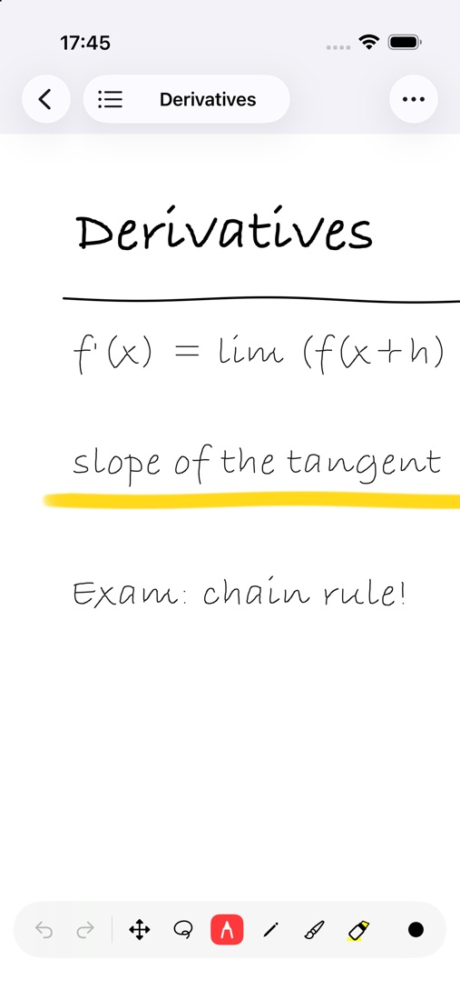
Tutto incluso. Gratis.
Niente abbonamento, niente funzioni bloccate, niente pubblicità. Tutto quello che vedi qui sotto è nell'app, su ogni dispositivo.

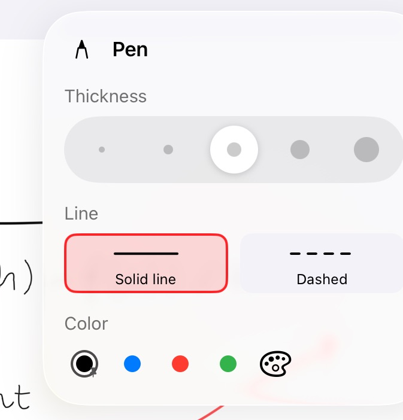
Ogni strumento in una barra
Penne, evidenziatore, gomma, lazo, righello e i tuoi colori, nella barra del titolo o fluttuante. Tocca di nuovo uno strumento per spessore, linea e colori; tieni premuto un colore per fissarlo.
Scarabocchia sopra qualcosa per cancellarlo. Su una Apple Pencil con doppio tocco, passa alla gomma. Puoi scrivere anche con il dito o il mouse, se preferisci.
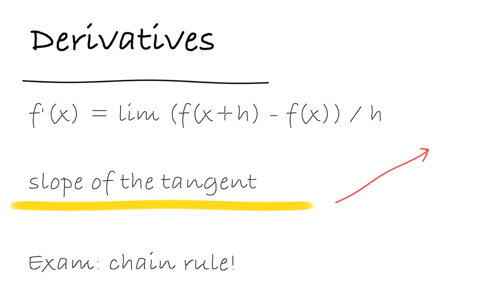

Una penna per chiaro e scuro
La penna predefinita scrive nero su bianco e bianco su nero, così ogni nota si legge bene quando il dispositivo passa alla modalità scura.
Gli evidenziatori si attenuano sulla carta scura, così l'inchiostro sotto resta chiaro.

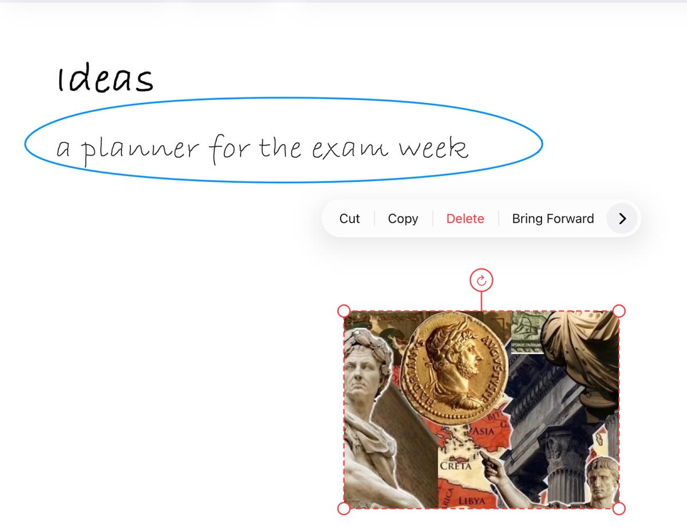
Copia e incolla tutto, ovunque
Prendi la tua scrittura con il lazo, copiala e incollala su un'altra pagina, in un'altra nota o su un altro dei tuoi dispositivi.
Incolla anche testo e immagini da qualsiasi app. Le immagini stanno sotto l'inchiostro, o sopra con Porta avanti.
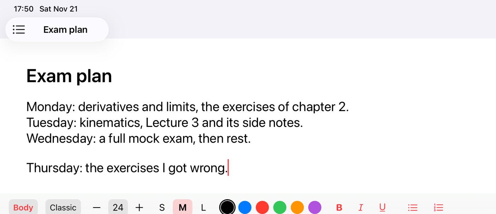
Scrivi con la tastiera dove scrivi a mano
Tocca e scrivi ovunque sulla pagina, con font, dimensioni e colori, accanto alla tua scrittura a mano.
Oppure passa alla Modalità testo e scrivi come in un documento, proprio dove sei.


PDF fatti per studiare
Trasforma le slide di una lezione o un libro intero in pagine su cui scrivere. Le note a lato danno a ogni slide spazio per le tue.
Capitoli e segnalibri sono nel Sommario, e Condividi come PDF li tiene come capitoli.


Leggi come un libro. Trova tutto.
La Modalità lettura mette le pagine affiancate. La lente trova le parole nel testo digitato e nei PDF, segna ogni risultato e li scorre uno a uno.
Su una pagina trova anche quello che hai scritto a mano, letto sul dispositivo.

Riposante per gli occhi di sera
Scurisci i PDF rende scure le slide bianche, senza toccare il file. Inchiostro ed evidenziatori restano leggibili sopra.

Organizzato a modo tuo
Note rapide per tutto, cartelle per le tue materie, gruppi al loro interno. Trascina una nota su un'altra per fare un gruppo.
Scrivi >> per collegare una nota, un gruppo o un segnalibro.

Sync che funziona e basta
Le tue note su iPad, iPhone e Mac con il tuo iCloud Drive: niente iscrizione, niente da ospitare, niente da pagare.
Sulla stessa Wi‑Fi o hotspot, le modifiche arrivano in circa un secondo, anche sulla pagina aperta. I dispositivi si abbinano con un codice, così nessun altro può collegarsi.
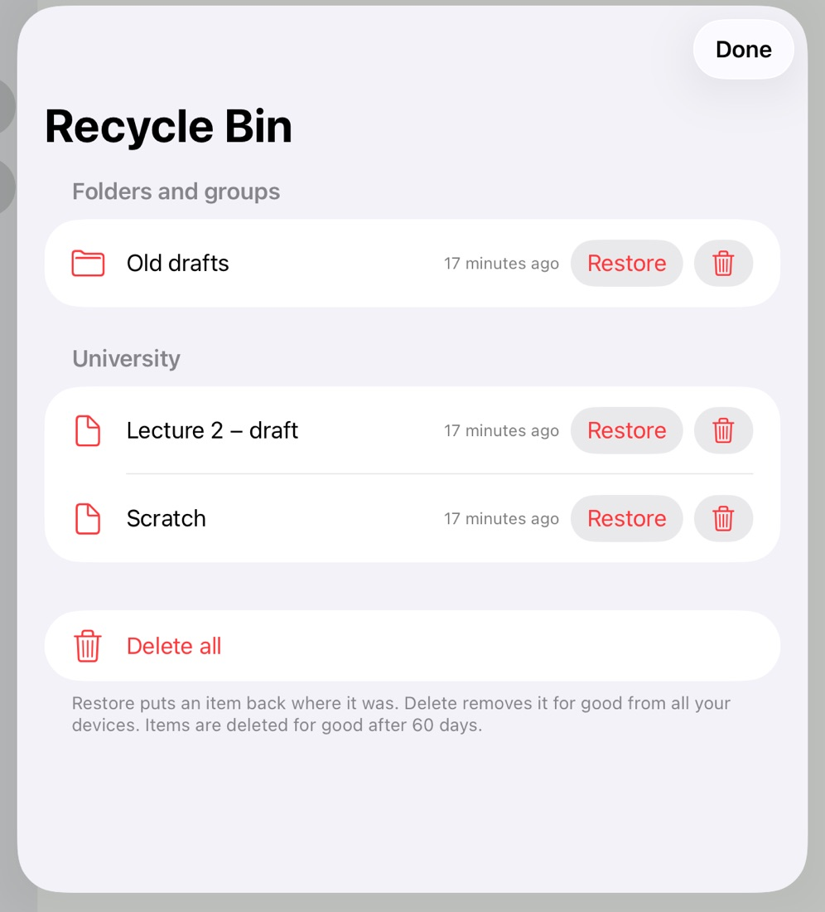
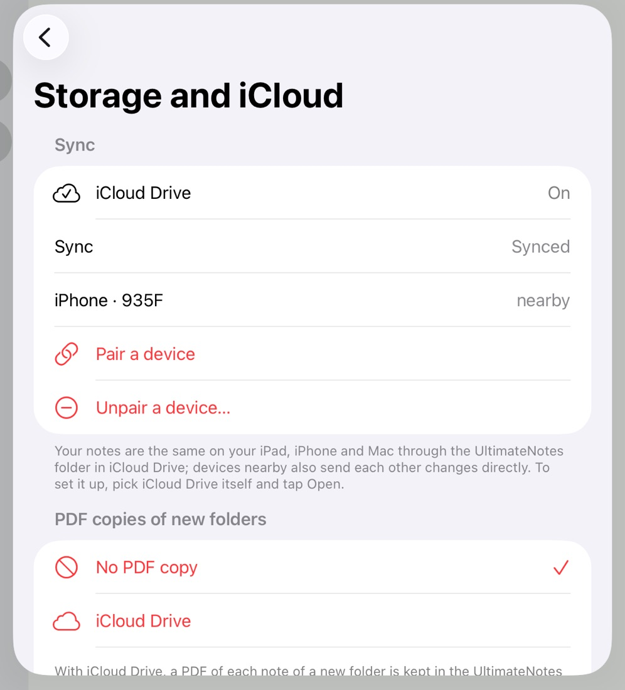
Tue, e al sicuro
Le note eliminate aspettano 60 giorni nel Cestino. Ogni nota può tenere una copia PDF in File.
Niente pubblicità, niente tracciamento, nessun dato raccolto. Le tue note restano sui tuoi dispositivi e nel tuo iCloud Drive.
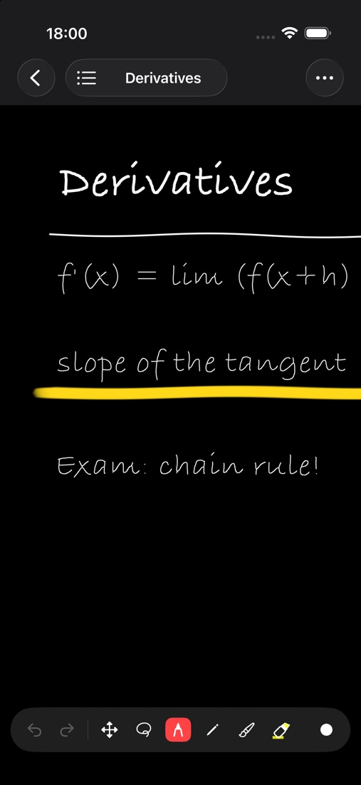
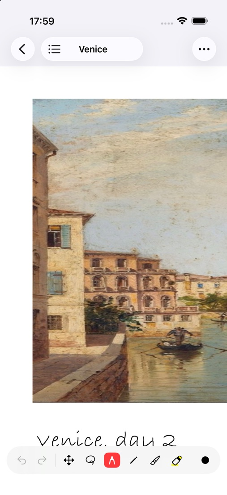
Anche in tasca
Le stesse note e gli stessi strumenti su iPhone. E i widget mettono la tua ultima nota, o tutte, nella schermata Home.
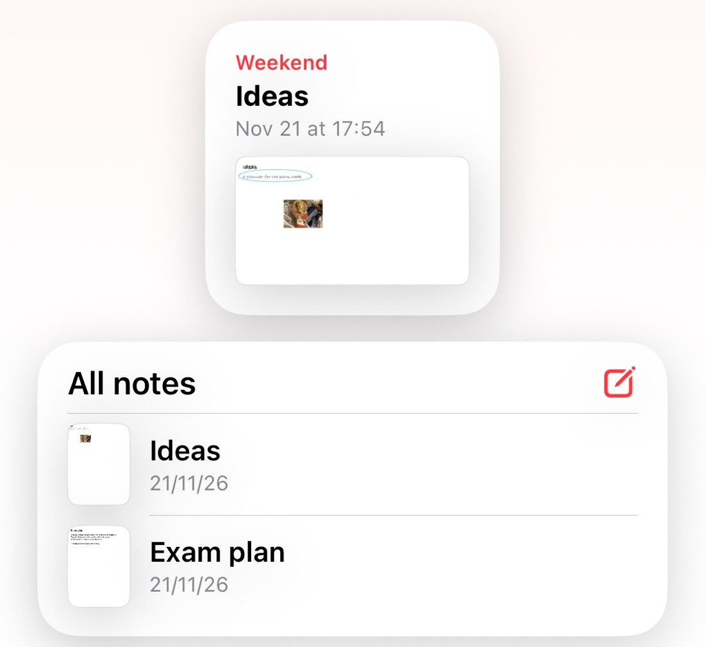
Domande
Ultimate Notes è gratis?
Sì. Tutte le funzioni sono incluse su iPad, iPhone e Mac: niente abbonamento, niente acquisti in-app, niente pubblicità.
Serve un account?
No. Non c'è niente a cui iscriversi. Le note si sincronizzano con il tuo iCloud Drive.
Funziona senza Apple Pencil?
Sì. Scrivi e disegna con il dito su iPad e iPhone, o con mouse e trackpad su Mac.
Posso scrivere su PDF e slide delle lezioni?
Sì. Importa un PDF o un libro e scrivi sulle sue pagine, con spazio accanto a ogni slide per le note a lato. Condividi come PDF tiene capitoli e segnalibri.
Posso portare le note da un'altra app?
Esportale come PDF dall'app che usi ora e importa il PDF in Ultimate Notes: puoi continuare a scrivere su ogni pagina.
Cerca nella mia scrittura a mano?
Sì. La ricerca trova le parole scritte a mano, nel testo digitato e nei PDF. La scrittura è letta sul tuo dispositivo; niente esce da lì.
Quali dati raccoglie?
Nessuno. Niente tracciamento, niente statistiche, niente inviato a noi. Le tue note restano sui tuoi dispositivi e nel tuo iCloud Drive.
Su quali dispositivi e in quali lingue?
iPad e iPhone con iPadOS o iOS 18 o successivi, e Mac con macOS 15 o successivi. L'app è in italiano, inglese, tedesco, spagnolo e francese.